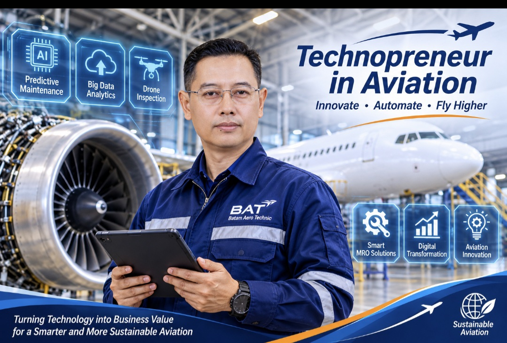

Dokumen ini memuat refleksi atas tujuh materi mata kuliah Technopreneurship (Pertemuan 1–7) dan satu refleksi keseluruhan, sebagaimana diminta pada tugas “Refleksi dari Materi Technopreneur” di portal STTKD. Refleksi dilengkapi dengan bukti pengalaman praktikum 1 sampai 7, termasuk tautan karya pada Lampiran A.

Alur penyusunan mengikuti pola: Materi (konsep diktat) → Observasi reflektif → Bukti praktikum atau pengalaman profesional → Catatan kritis → Refleksi keseluruhan. Tabel berikut memetakan setiap materi terhadap bukti dan bagian refleksinya.
| Materi | Konsep Inti (Diktat) | Bukti Praktikum / Pengalaman | Bagian |
|---|---|---|---|
| P1 Concept | Opportunity–organization–value; technopreneur | Praktikum 1 (website Canva) | 3.1 |
| P2 Character | Persepsi → kebiasaan → karakter; Be-Do-Have; SCAMPER | Pengalaman profesional perawatan pesawat | 3.2 |
| P3 Leadership | Pilihan dan pengaruh; kepemimpinan diri; jeda stimulus–respons | Pengalaman profesional perawatan pesawat | 3.3 |
| P4 Communication | Berbagi pemahaman; mendengarkan; emosi menggerakkan perilaku | Praktikum 6 (proposal dan surat penawaran) | 3.4 |
| P5 Financial Literacy | Aset vs liabilitas; investasi pada diri | Praktikum 2 (Ajaib, GOTO, SPCX) | 3.5 |
| P6 Innovation | SCAMPER; lateral thinking; Six Thinking Hats | Praktikum 4, 5, dan 7 | 3.6 |
| P7 Business Model | Business Model Canvas; Value Proposition Canvas; 3 alasan gagal | Praktikum 6 dan 7 | 3.7 |
| ID | Ketentuan Tugas | Bukti pada Dokumen | Status |
|---|---|---|---|
| R-01 | Membuat refleksi sederhana untuk setiap materi Technopreneur | Bagian 3.1–3.7 | Terpenuhi |
| R-02 | Minimal 1 paragraf refleksi untuk setiap materi (7 paragraf) | Bagian 3 (tujuh paragraf) | Terpenuhi |
| R-03 | 1 paragraf refleksi untuk keseluruhan materi kuliah | Bagian 4 | Terpenuhi |
| R-04 | Pelengkap: bukti Praktikum 1 (Canva) dan Praktikum 7 (Google Opal) | Bagian 5; Lampiran A | Terpenuhi |
Materi Concept mendefinisikan wirausahawan sebagai orang yang melihat peluang, membentuk organisasi untuk memanfaatkannya, dan dengan demikian menciptakan nilai tambah (opportunity–organization–value), sedangkan technopreneur adalah wirausahawan berbasis teknologi (Sofyan, n.d.). Definisi ini menggeser pemahaman saya dari wirausaha sebagai aktivitas berjualan menjadi proses yang menghubungkan peluang, organisasi, dan nilai. Diktat juga mengutip kebutuhan sekitar 2% wirausahawan bagi kemajuan suatu negara, sementara proporsi di Indonesia dinyatakan masih di bawah 1%; angka ini saya baca sebagai konteks motivasional dan bukan temuan yang saya verifikasi. Langkah konkret pertama saya adalah Praktikum 1, yaitu website pribadi di Canva yang memuat profil diri dan gagasan bisnis sebagai etalase digital. Sebagai praktisi perawatan pesawat, saya menyadari bahwa kompetensi teknis perlu dipadukan dengan kemampuan melihat peluang dan membangun nilai, dan kesadaran ini menjadi dasar gagasan PW CORE V1 pada Praktikum 6.
Materi Character menegaskan rantai persepsi, kebiasaan, dan karakter, dengan pandangan bahwa karakter adalah unsur terpenting keberhasilan wirausaha di samping mimpi yang jelas melalui paradigma Be-Do-Have (Sofyan, n.d.). Gagasan ini sejalan dengan Covey (1989) yang memandang kebiasaan sebagai pembentuk karakter. Perubahan cara pandang dari problem solving menjadi solution finding, serta teknik SCAMPER (Eberle, 1996), menjadi alat konkret untuk mengubah persepsi. Dalam pekerjaan saya, kerusakan komponen yang berulang dapat dipandang sebagai beban, atau sebagai peluang membangun pemantauan kondisi yang lebih baik. Secara kritis, saya memandang karakter sebagai syarat penting tetapi bukan satu-satunya penentu, karena diktat sendiri menempatkan peluang, kepemimpinan, model bisnis, dan pengelolaan sumber daya sebagai unsur wirausaha yang berhasil.
Materi Leadership memaknai kepemimpinan sebagai pilihan dan pengaruh, serta sebagai tindakan dan bukan jabatan. Kepemimpinan diri yang terdiri atas self-understanding, self-awareness, dan self-control dinyatakan sebagai prasyarat memimpin orang lain, termasuk kesadaran bahwa ada jeda antara stimulus dan respons (Sofyan, n.d.). Konsep ini dekat dengan kecerdasan emosional (Goleman, 1995) dan sangat relevan di dunia penerbangan yang menuntut ketenangan, keselamatan, dan akuntabilitas. Diktat juga membedakan pemimpin yang berfokus pada manusia dan visi dengan manajer yang berfokus pada sistem. Menurut saya, pada organisasi dengan regulasi ketat seperti perawatan pesawat, keduanya tetap diperlukan; diktat pun menyebut kepemimpinan dan manajemen sebagai hal yang saling melengkapi.
Materi Communication & Motivation memaknai komunikasi sebagai berbagi pemahaman, dengan kunci mendengarkan untuk mengerti dan mengonfirmasi ulang apa yang dipahami (Sofyan, n.d.), yang sejalan dengan prinsip memahami terlebih dahulu sebelum dipahami (Covey, 1989). Dalam pekerjaan perawatan, serah terima pekerjaan yang tidak jelas dapat berdampak pada keselamatan, sehingga konfirmasi ulang bukan sekadar etika berkomunikasi. Praktik komunikasi bisnis tampak pada Praktikum 6, ketika proposal dan surat penawaran kerja sama disusun agar nilai produk dapat dipahami calon mitra. Pada bagian motivasi, diktat menegaskan bahwa pengetahuan tidak mengubah perilaku, melainkan emosi, dan bahwa banyak penolakan sebenarnya berasal dari kurangnya kejelasan; gagasan ini sejalan dengan Heath dan Heath (2010). Saya juga mencatat bahwa untuk memotivasi orang lain, saya perlu memulainya dari diri sendiri.
Materi Financial Literacy menekankan bahwa literasi keuangan jarang diajarkan di sekolah, dengan pembedaan aset yang memasukkan uang ke kantong dan liabilitas yang mengeluarkannya, serta pentingnya berinvestasi pada pendidikan diri (Sofyan, n.d.; Kiyosaki, 1998). Praktikum 2 memberi pengalaman langsung: saya membeli saham GOTO senilai Rp6.000 dan saham SPCX bernilai sekitar US$2 sebagai biaya belajar, serta mencatat bahwa IHSG turun sekitar 26% dalam setahun dan TLKM turun 14,86% dalam sehari. Data ini menunjukkan bahwa risiko harga tidak hilang hanya karena aset berada di pasar yang teregulasi. Dengan profil risiko konservatif, saya memilih menempatkan saham berkapitalisasi besar sebagai inti dan memperlakukan aset spekulatif sebagai porsi kecil. Kerangka Kiyosaki bersifat populer dan sebagian klaimnya perlu diuji dengan literatur keuangan akademik, sehingga saya menggunakannya sebagai pemantik literasi dan bukan satu-satunya pedoman.
Materi Thinking, Creativity & Innovation memandang kreativitas sebagai keterampilan yang dapat dilatih dengan alat berpikir, seperti SCAMPER (Eberle, 1996), lateral thinking (De Bono, 1970), dan Six Thinking Hats (De Bono, 1985). Hambatan yang disebutkan antara lain takut salah, terlalu bergantung pada logika, dan pengaruh sistem pendidikan (Sofyan, n.d.). Pada proposal Praktikum 6, saya menerapkan unsur combine dengan memadukan data log penerbangan dan analitik tren mesin. Gagasan itu kemudian diwujudkan pada Praktikum 7 dalam dua prototipe Google Opal, yaitu alat analisis kelayakan bisnis dan CessnaGuard, sedangkan Praktikum 4 menunjukkan bahwa aplikasi Daily Notebook dapat dibuat di AppSheet dalam satu hari tanpa pemrograman. Pengalaman ini mengajarkan bahwa alat berpikir kreatif dan alat no-code mempercepat gagasan menjadi prototipe, tetapi keluarannya tetap harus diuji.
Materi Business Model & Proposal menyebut tiga alasan technopreneur gagal: lupa merumuskan model bisnis, terlalu berfokus pada teknologi dan melupakan pengalaman pelanggan, serta menyerah terlalu cepat (Sofyan, n.d.). Business Model Canvas (Osterwalder & Pigneur, 2010) dan Value Proposition Canvas (Osterwalder et al., 2014) menjadi alat untuk menjawabnya. Saya menerapkannya pada Praktikum 6 melalui proposal PW CORE V1 sebanyak 18 slide, dengan permintaan seed Rp750 juta untuk 15% ekuitas dan perkiraan break-even pada bulan ke-16. Asumsi tersebut saya jelajahi pada Praktikum 7 melalui aplikasi Opal Analisis Kelayakan Bisnis: dengan 50 pesawat, harga Rp3,5 juta per pesawat per bulan, dan biaya Rp105 juta per bulan, titik impas 30 pesawat selaras dengan proposal. Seluruh angka tetap berupa asumsi sehingga, sejalan dengan lean startup (Ries, 2011; Blank, 2013), langkah berikutnya adalah wawancara operator dan pilot project untuk memvalidasi hipotesis.
Secara keseluruhan, tujuh materi membentuk alur dari dalam ke luar: persepsi dan karakter, kepemimpinan, komunikasi dan motivasi, literasi keuangan, kemampuan berpikir kreatif, hingga model bisnis dan proposal. Praktikum 1 sampai 7 berperan sebagai eksperimen aktif yang menguji konsep tersebut, dan hasilnya mengingatkan bahwa membuat prototipe relatif mudah, tetapi nilai bisnis baru terbukti bila ada pengguna yang mau memakai dan membayar; pada Praktikum 3, misalnya, dua NFT berhasil diterbitkan tetapi tidak ada pembelian selama periode praktikum. Pengalaman TokoMall yang tidak dapat dijangkau dan aplikasi Opal yang berhenti berjalan setelah 17 November 2026 menunjukkan bahwa ketergantungan pada satu platform adalah risiko nyata bagi technopreneur. Ke depan, saya ingin mengembangkan solusi berbasis data untuk perawatan pesawat, dimulai dengan memvalidasi kebutuhan operator secara jujur terhadap asumsi.
| No. | Praktikum | Hasil Utama | Bukti |
|---|---|---|---|
| 1 | Website Canva | Website pribadi di Canva yang memuat profil diri dan gagasan bisnis. | Tautan website (Lampiran A) |
| 2 | Blockchain & Pasar Modal | Akun PINTU, AJAIB, dan MetaMask; pembelian GOTO dan SPCX; perbandingan saham dan kripto. | Laporan Praktikum 2 |
| 3 | NFT Polygon | Koleksi “Agung Collection” (ERC-721, 2 item); NFT #1 dijual; NFT #2 ditransfer. | Laporan Praktikum 3 |
| 4 | Aplikasi No-Code | Aplikasi Daily Notebook dengan tabel 8 kolom; tampilan deck dan peta di AppSheet. | Laporan Praktikum 4 |
| 5 | AI Digital Asset | Chatbot RAG pada XBOT365 (BengkelPintar); pengujian 9 pertanyaan. | Laporan Praktikum 5 |
| 6 | Proposal PW CORE V1 | Proposal 18 slide di Canva dengan BMC, VPC, proyeksi keuangan, dan penawaran seed Rp750 juta. | Laporan Praktikum 6 |
| 7 | Automation Opal | Dua aplikasi: Analisis Kelayakan Bisnis dan CessnaGuard (pemantauan mesin PT6A-114A). | Laporan Praktikum 7 |
Blank, S. (2013). Why the lean start-up changes everything. Harvard Business Review, 91(5), 63–72.
Covey, S. R. (1989). The 7 habits of highly effective people. Free Press.
De Bono, E. (1970). Lateral thinking: Creativity step by step. Harper & Row.
De Bono, E. (1985). Six thinking hats. Little, Brown and Company.
Eberle, B. (1996). Scamper: Creative games and activities for imagination development. Prufrock Press.
Goleman, D. (1995). Emotional intelligence. Bantam Books.
Heath, C., & Heath, D. (2010). Switch: How to change things when change is hard. Broadway Books.
Kiyosaki, R. T. (1998). Rich Dad’s Cashflow Quadrant. Warner Books.
Kolb, D. A. (1984). Experiential learning: Experience as the source of learning and development. Prentice Hall.
Osterwalder, A., & Pigneur, Y. (2010). Business model generation. John Wiley & Sons.
Osterwalder, A., Pigneur, Y., Bernarda, G., & Smith, A. (2014). Value proposition design. John Wiley & Sons.
Ries, E. (2011). The lean startup: How today’s entrepreneurs use continuous innovation to create radically successful businesses. Crown Business.
Sofyan, E. (n.d.). Technopreneurship: Pertemuan 1–7 [Diktat kuliah]. Program Magister Teknologi Dirgantara, STTKD Yogyakarta.
| Karya | Platform | Tautan |
|---|---|---|
| Website pribadi (Praktikum 1) | Canva | agungprabowo.my.canva.site/agung-prabowo-technopreneur |
| Proposal bisnis PW CORE V1 (Praktikum 6) | Canva | canva.link/otjjruoqonejvkd |
| Analisis Kelayakan Bisnis (Praktikum 7) | Google Opal | opal.google/app/1xYplkZkrOBX9SNWbnpcxLjamloA72x3y |
| CessnaGuard EHM (Praktikum 7) | Google Opal | opal.google/app/1b7pISwG8WrhDN2VnGUw_V8ZXL0nNoS0N |